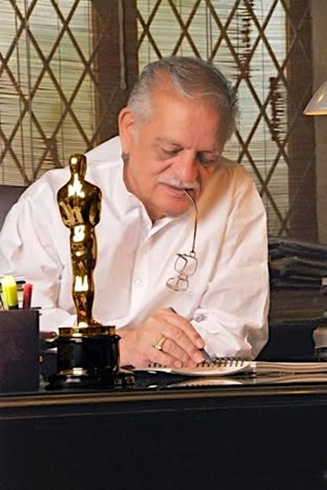

Sampooran Singh Kalra(Guljar)
Born
18 August 1934 Dina, Punjab, British India (present-day Punjab, Pakistan)
Occupation
Lyricist Poet Author Screenwriter Film director Film producer)
Years active
1971–99 (as director) (retired) 1956–present (as lyricist))
1971–99 (as director) (retired) 1956–present (as lyricist))